|
|  |
| 
 | |
| |
|  | Boulder Badge | Earn this badge by defeating Brock at the Pewter City Gym. Brock specializes in rock type Pokémon. |
|  | Cascade Badge | Earn this badge by defeating Misty at the Cerulean City Gym. Misty specializes in water type Pokémon. |
|  | Thunder Badge | Earn this badge by defeating Lt. Surge at the Vermilion City Gym. St. Surge specializes in electric type Pokémon. |
|  | Rainbow Badge | Earn this badge by defeating Erika at the Celadon City Gym. Erika specializes in grass type Pokémon. |
|  | Soul Badge | Earn this badge by defeating Koga at the Fuchsia City Gym. Koga specializes in poison type Pokémon. |
|  | Marsh Badge | Earn this badge by defeating Sabrina at the Saffron City Gym. Sabrina specializes in psychic type Pokémon. |
|  | Volcano Badge | Earn this badge by defeating Blaine at the Cinnabar Island Gym. Blaine specializes in fire type Pokémon. |
|  | Earth Badge | Earn this badge by defeating Giovanni at the Viridian City Gym. Giovanni specializes in ground type Pokémon. |
If a Pokémon Trainer earns all eight badges, he or she is qualified to challenge the Elite Four of the Indigo League, or to participate in the Indigo League Championship. Defeating the Elite Four, including the current Champion, or winning the Indigo League Championship, grants the Trainer the titles of Pokémon Master, member of the Indigo League, and new Pokémon Champion.